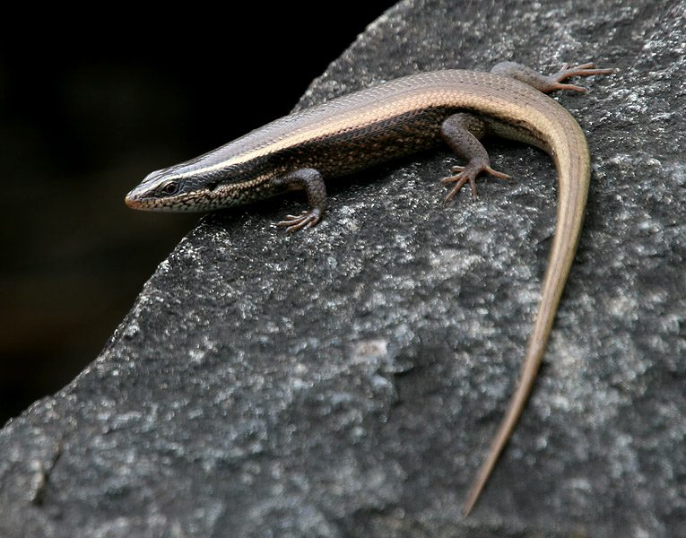

ब्रॉन्ज ग्रास स्किंकBronze Grass Skink
Eutropis macularia · Scincidae · REP-0045

- Scientific name वैज्ञानिक नाम
- Eutropis macularia (Blyth, 1853)
- Family कुल
- Scincidae
- Hindi हिंदी
- ब्रॉन्ज ग्रास स्किंक
- Local names स्थानीय नाम
- bronze grass skink, bronz grass skink, grass skink, choti sarata
- Status here यहाँ की स्थिति
- native
- Movement आवागमन
- Resident, here all year
- Known from कहाँ दर्ज
- Others have published records from the wider Awadh–Purvanchal plain, none yet from Basti–Ayodhya अवध–पूर्वांचल से दूसरों के प्रकाशित अभिलेख, बस्ती–अयोध्या से अभी नहीं
- IUCN IUCN
- not evaluated
- Review समीक्षा
- not yet reviewed
When to look कब देखें
Present all year. साल भर मौजूद।
Tell it apart from इनसे अलग पहचानें
ब्रॉन्ज ग्रास स्किंक / Bronze Grass Skink
Eutropis macularia (Blyth, 1853) — Scincidae
ब्रॉन्ज ग्रास स्किंक — यह एक छोटी, फुर्तीली और चमकदार भूरे रंग की छिपकली है जो खेतों की मेड़ों, सूखी घास और बगीचों के किनारों पर धूप सेकती नजर आती है। इसकी पीठ पर गहरे धब्बे होते हैं और बगल में सफेद बिंदियां पाई जाती हैं। प्रजनन काल में नर की छाती और गर्दन का निचला हिस्सा सिंदूरी या लाल हो जाता है। यह जमीन पर दौड़कर छोटे कीड़ों और टिड्डों का शिकार करती है।
Quick Identification त्वरित पहचान
| Feature | Description |
|---|---|
| Body size | Small, slender ground skink with well-developed limbs and active movements |
| Dorsal scalation | Strongly keeled scales, with 5 to 7 distinct sharp keels per dorsal scale (Smith 1935) |
| Coloration | Metallic bronze or dark brown above, often with longitudinal rows of blackish spots |
| Flank pattern | Dark brown lateral band peppered with tiny white specks or ocellated spots |
| Breeding colors | Mature males develop bright scarlet or orange-red wash along the throat, chin, and flanks |
| Midbody scales | Arranged in 28 to 30 rows around the body circumference |
Field tip: Watch along open sunlit pathways and dry grass tussocks around village orchard edges during warm sunny mornings.
हिंदी: यह छोटी कांसे जैसी छिपकली है जिसकी पीठ के शल्कों पर 5 से 7 बारीक धारियां होती हैं। नर के गले और बगल पर लाल रंग देखकर इसे आसानी से पहचाना जा सकता है।
Morphology आकारिकी
Biometrics as given by Smith (1935):
| Measurement | Value | Source |
|---|---|---|
| Snout-to-vent length | 65 mm | Smith (1935) |
The head is moderate in size, with an obtusely pointed snout and distinct canthus rostralis. The ear opening is suboval, smaller than the eye, with 2 or 3 tiny pointed lobules on its anterior margin. The lower eyelid has an undivided, semi-transparent central disc. The supranasals are separate, rarely touching. The frontonasal is as broad as long. Prefrontals are distinct, sometimes in contact with one another. The dorsal scales are strongly multicarinate, consistently bearing 5 to 7 sharp parallel keels, which give the back a distinctly rough texture despite its glossy sheen (Sharma 2002). Limbs are well-proportioned, with pentadactyle digits bearing sharp curved claws.
हिंदी: इसका थूथन नुकीला और आंखें स्पष्ट होती हैं। कान के छेद के आगे छोटे उभार होते हैं। पीठ के शल्कों पर कई नुकीली धारियां होती हैं जिससे त्वचा खुरदुरी महसूस होती है।
Behaviour & Ecology व्यवहार और पारिस्थितिकी
The bronze grass skink is an active diurnal heliotherm (sun-seeker), emerging from subterranean retreats shortly after sunrise to bask on dry soil clods, fallen leaves, or low brick margins until its body temperature reaches the optimal activity range. Once warm, it dashes actively through open vegetation, investigating grass tussocks and leaf litter for moving prey. When threatened, it darts rapidly into dense thorn scrub or subterranean rodent burrows rather than climbing trees. It displays acute vision, detecting moving insects from several meters away before executing a rapid sprint and pounce.
हिंदी: यह दिन के समय धूप में सक्रिय रहने वाला जीव है। सुबह-सुबह यह जमीन की सूखी पत्तियों या ईंटों पर धूप सेकती है और गर्म होते ही तेजी से दौड़कर शिकार तलाशती है।
Life Cycle / Phenology जीवन चक्र
Reproductive displays begin in late spring (April) and peak during the monsoon months from June to August. Males establish small display territories on sunlit patches, displaying their brilliant crimson or scarlet throats and flanks while bobbing their heads and flicking their tails to court passing females. Oviposition takes place during the monsoon. Females lay clutches of 3 to 6 small oval white eggs (Sharma 2002) in shallow nests excavated in damp soil beneath flat stones, fallen logs, or leaf litter. Hatchlings emerge after 30 to 40 days, measuring about 30 mm in total length (Sharma 2002).
हिंदी: मई से अगस्त के बीच इसका प्रजनन काल होता है। नर अपने लाल गले को दिखाकर मादा को आकर्षित करता है। मादा नम मिट्टी में तीन से छह अंडे देती है जिनसे एक महीने में बच्चे निकलते हैं।
Host Plants or Prey आहार
This skink is a generalist terrestrial insectivore that actively hunts small surface-active arthropods. Its primary prey consists of small grasshoppers, field crickets, leafhoppers, weevils, and crawling caterpillars. It also preys upon wandering ground spiders, small roaches, termites, and ants. It captures prey with rapid lunges and shakes larger orthopterans against the ground to dislodge thorny legs before swallowing them whole.
हिंदी: इसका मुख्य भोजन छोटे टिड्डे, झींगुर, कीड़ों की इल्लियां, छोटे भृंग (बीटल) और मकड़ियां हैं। यह अपने शिकार को झपटकर पकड़ती है।
Predators / Natural Enemies शत्रु
Diurnal predators on the Gangetic plain include small raptors such as the Black Kite (Milvus migrans) and insectivorous birds like the Black Drongo (Dicrurus macrocercus) and Common Myna (Acridotheres tristis). Terrestrial reptiles such as the Checkered Keelback (Fowlea piscator) and juvenile Bengal Monitor (Varanus bengalensis) frequently hunt grass skinks along agricultural ditch margins. Domestic cats and predatory birds also capture them when basking in open areas.
हिंदी: काली चील, भुजंगा (काला कोतवाल) और मैना जमीन पर धूप सेकती इन छिपकलियों को झपट लेते हैं। पानी के सांप और गोह के बच्चे भी इनका शिकार करते हैं।
Agricultural / Human Relevance कृषि प्रासंगिकता
In the agricultural landscapes of Awadh, this skink functions as an effective natural insect predator along crop field borders, orchard edges, and grazing lands. By consuming leaf-eating caterpillars, grasshopper nymphs, and phytophagous bugs, it contributes to pest suppression in adjacent pulses, mustard, and cereal crops. It causes zero damage to crops or domestic premises and possesses no venom or physical hazard for humans.
हिंदी: यह फसलों को नुकसान पहुंचाने वाले टिड्डों और सूंडियों को खाकर किसानों की मदद करती है। यह बिल्कुल जहरीली नहीं होती और इंसानों के लिए पूरी तरह हानिरहित है।
Expected Locally स्थानीय रूप से अपेक्षित
Not a field record. Written from published accounts for eastern Uttar Pradesh. No confirmed local sighting yet — if you have seen it, that is what the atlas needs.
अभी तक स्थानीय पुष्टि नहीं। यह विवरण प्रकाशित स्रोतों से है, किसी अवलोकन से नहीं।
In Basti and Ayodhya districts, optimal search localities include sunny earthen field bunds, edge zones of traditional mango orchards, uncultivated sandy field corners, and canal embankment grasses. Morning surveys during sunny morning hours between April and September yield the best chances of encountering active basking individuals. GBIF holds published records from the wider Awadh–Purvanchal plain, none yet from Basti–Ayodhya. A first local record requires a clear photograph displaying the multi-keeled dorsal scales and lateral white speckling submitted through the atlas portal.
Distribution वितरण
Global range: Widespread across South and Southeast Asia, from Pakistan through India, Sri Lanka, Bangladesh, Myanmar, Thailand, and Malaysia.
In India: Found across almost the entirety of the mainland, including the southern peninsula, central uplands, and northern Gangetic plains.
In Uttar Pradesh: Documented from several central and eastern districts; common in alluvial agrarian landscapes.
In Basti district / eastern UP: Expected throughout the Kuwana, Bansi, and Ghaghara catchment tracts in open scrub and orchard boundaries.
हिंदी: यह दक्षिण और दक्षिण-पूर्व एशिया में बहुत बड़े भूभाग में पाई जाती है। उत्तर प्रदेश के कछारी भागों और खेतों की मेड़ों पर इसका फैलाव दर्ज है।
Research Questions शोध प्रश्न
- What is the peak thermal window for surface basking activity during summer versus autumn months? / गर्मियों और पतझड़ के महीनों में इसके धूप सेकने के सबसे अनुकूल समय में क्या अंतर होता है?
- Does the intensity of scarlet breeding coloration in males correlate with territorial dominance or body condition? / क्या नर के लाल रंग की चमक उसकी ताकत या इलाके पर नियंत्रण से जुड़ी होती है?
- What is the proportion of agricultural pest insects in its summer diet compared to non-pest soil arthropods?
- How do pesticide applications along field margins affect population densities of this ground skink?
- Can local students document the seasonal onset of male breeding coloration using smartphone photographs? / क्या छात्र तस्वीरों की मदद से नर के गले का रंग बदलने का समय दर्ज कर सकते हैं?
Similar Species मिलती-जुलती प्रजातियाँ
| Species | How to tell apart | हिंदी | |
|---|---|---|---|
| Common Keeled Skink \ | Eutropis carinata | Much larger in adult size (snout-vent length up to 125 mm), dorsal scales usually 3-keeled, lacks crimson breeding wash on flanks (Smith 1935) | कॉमन कील्ड स्किंक आकार में दोगुनी बड़ी होती है, इसके शल्कों पर 3 धारियां होती हैं और इसके गले पर लाल रंग नहीं होता |
| Striped Grass Skink \ | Eutropis dissimilis | Possesses distinct pale greenish-white longitudinal stripes along the back bordered with black lines (Sharma 2002) | स्ट्राइप्ड ग्रास स्किंक की पीठ पर तीन साफ चमकदार धारियां होती हैं |
| White-spotted Supple Skink \ | Riopa albopunctata | Slender cylindrical body with minute reduced limbs and smooth, unkeeled scales | सपल स्किंक का शरीर लंबा सांप जैसा और पैर बहुत छोटे होते हैं तथा इसकी पीठ चिकनी होती है |
Field rule: Small shiny bronze skink with 5 to 7 keels on each dorsal scale; breeding males show bright scarlet throat and flanks.
हिंदी: यह 5-7 धारियों वाले शल्कों वाली छोटी छिपकली है; प्रजनन काल में नर की छाती और गर्दन लाल हो जाती है।
Taxonomy & Classification वर्गीकरण
Original description. Blyth (1853), Notices and descriptions of various reptiles, new or little known, Journal of the Asiatic Society of Bengal, 22, p. 652; type locality: Rangpur, Bengal (now Bangladesh).
Subspecies. Nominal form Eutropis macularia macularia is recognized across northern India and the Gangetic plains.
Family and order placement. Belongs to the family Scincidae, subfamily Mabuyinae, within the order Squamata.
Phylogenetic notes. Formerly placed in the widespread genus Mabuya Fitzinger, 1826, but transferred to Eutropis Fitzinger, 1843, following systematic revisions of Asian scincids.
IUCN status rationale. Not evaluated by the IUCN Red List; highly adaptable and widely distributed across diverse human-modified ecosystems in South Asia.
हिंदी: इसका पहला विवरण एडवर्ड ब्लिथ ने 1853 में बंगाल के रंगपुर से प्रकाशित किया था। पहले इसे माबुया वंश में रखा गया था, अब यह यूट्रोपिस वंश में शामिल है।
Photo Gallery फोटो गैलरी
No photos yet — add field photos to media/species/bronze_grass_skink/ and run node scripts/sync_photos.js.
Photos needed आवश्यक फोटो
- [ ] Habitat view showing typical local microhabitat (प्राकृतिक वास का विस्तृत परिदृश्य)
- [ ] Breeding male showing bright scarlet throat and flank coloration (प्रजनन काल में लाल गले वाला नर)
- [ ] Close-up of dorsal scales showing 5–7 sharp keels (पीठ के बहु-धारिया शल्कों का क्लोज-अप दृश्य)
- [ ] Individual active on sunlit dry leaf litter (सूखी पत्तियों पर धूप सेकती छिपकली)
References संदर्भ
- Blyth, E. (1853). Notices and descriptions of various reptiles, new or little known. Journal of the Asiatic Society of Bengal, 22, pp. 639–655.
- Smith, M. A. (1935). The Fauna of British India, Including Ceylon and Burma. Reptilia and Amphibia. Vol. II.—Sauria. Taylor and Francis, London.
- Sharma, R. C. (2002). The Fauna of India and the Adjacent Countries. Reptilia (Sauria). Volume II. Zoological Survey of India, Kolkata.
- GBIF Occurrence Data — Eutropis macularia, India (2025).
Source file: species/fauna/reptiles/bronze_grass_skink.md